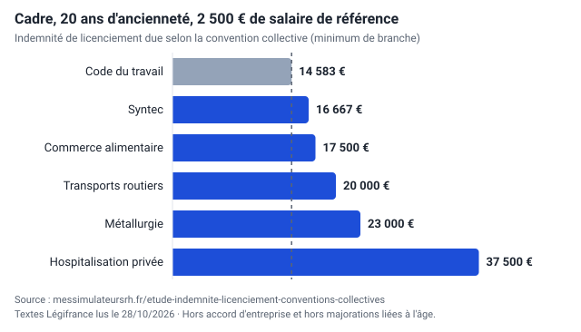

Indemnité de licenciement : ce que change (ou non) votre convention collective
Nous avons relu, article par article, la règle d'indemnité de licenciement de dix conventions collectives parmi les plus répandues, puis calculé ce qu'elles versent à 5, 10 et 20 ans d'ancienneté, face au minimum du Code du travail. Résultat : l'écart se joue presque entièrement chez les cadres.
Par Nathan Penin, éditeur du site. Étude publiée le 28 octobre 2026. Textes lus sur Légifrance le 28 octobre 2026. Données téléchargeables sous Licence Ouverte.
Ce qu'il faut retenir
- 8 conventions sur 10 ne versent jamais plus que le Code du travail à un salarié non cadre, que ce soit à 5, 10 ou 20 ans d'ancienneté.
- Pour un cadre, les 5 conventions de l'étude qui ont un barème cadre versent davantage dès 10 ans : de +1 250 € à +12 500 € pour un salaire de référence de 2 500 €.
- À 20 ans, l'écart entre conventions atteint 22 917 € pour un cadre : de 14 583 € (minimum légal) à 37 500 € (hospitalisation privée).
- 5 formules conventionnelles sont inférieures au minimum légal (HCR, bâtiment ouvriers, transports ouvriers, propreté, hospitalisation privée non-cadres avant 20 ans) : c'est alors l'indemnité légale qui est due.
Calculs : salaire de référence de 2 500 € brut, licenciement pour motif personnel hors faute grave ou lourde, salarié de moins de 50 ans. Détail et limites ci-dessous.
Salariés non cadres : la convention change rarement le montant
Pour un employé, un ouvrier ou un agent de maîtrise, la plupart des conventions reprennent la formule du Code du travail (1/4 de mois par année jusqu'à 10 ans, 1/3 au-delà) ou prévoient moins. Seules deux conventions de l'étude font mieux, et seulement à 20 ans d'ancienneté.
| Convention (catégorie) | 5 ans | 10 ans | 20 ans |
|---|---|---|---|
| Code du travail (minimum légal) | 3 125 € | 6 250 € | 14 583 € |
| Commerce alimentaire (IDCC 2216) employés, ouvriers, maîtrise | 3 125 € = légal | 6 250 € = légal | 14 583 € = légal |
| Syntec (IDCC 1486) ETAM | 3 125 € = légal | 6 250 € = légal | 16 667 € +2 083 € |
| Hôtels, cafés, restaurants (IDCC 1979) tous salariés | 3 125 € = légal | 6 250 € = légal | 14 583 € = légal |
| Métallurgie (IDCC 3248) groupes A à E | 3 125 € = légal | 6 250 € = légal | 14 583 € = légal |
| Bâtiment, ouvriers (IDCC 1597) ouvriers | 3 125 € = légal | 6 250 € = légal | 14 583 € = légal |
| Transports routiers (IDCC 16) ouvriers | 3 125 € = légal | 6 250 € = légal | 14 583 € = légal |
| Propreté (IDCC 3043) tous salariés | 3 125 € = légal | 6 250 € = légal | 14 583 € = légal |
| Aide à domicile (IDCC 2941) tous salariés | 3 125 € = légal | 6 250 € = légal | 14 583 € = légal |
| Services de l'automobile (IDCC 1090) tous salariés | 3 125 € = légal | 6 250 € = légal | 14 583 € = légal |
| Hospitalisation privée (IDCC 2264) non-cadres | 3 125 € = légal | 6 250 € = légal | 15 000 € +417 € |
Cadres : des écarts de plusieurs milliers d'euros
Cinq des dix conventions ont un barème propre aux cadres. Toutes dépassent le minimum légal à 10 ans d'ancienneté. Dans les cinq autres, la même règle vaut pour tous les salariés (HCR, propreté, aide à domicile, automobile) ou les cadres relèvent d'une autre convention (bâtiment : IDCC 2420).
| Convention (catégorie) | 5 ans | 10 ans | 20 ans |
|---|---|---|---|
| Code du travail (minimum légal) | 3 125 € | 6 250 € | 14 583 € |
| Commerce alimentaire (IDCC 2216) cadres | 3 125 € = légal | 7 500 € +1 250 € | 17 500 € +2 917 € |
| Syntec (IDCC 1486) ingénieurs et cadres | 4 167 € +1 042 € | 8 333 € +2 083 € | 16 667 € +2 083 € |
| Métallurgie (IDCC 3248) groupes F à I, moins de 50 ans | 3 125 € = légal | 8 000 € +1 750 € | 23 000 € +8 417 € |
| Transports routiers (IDCC 16) ingénieurs et cadres | 5 000 € +1 875 € | 10 000 € +3 750 € | 20 000 € +5 417 € |
| Hospitalisation privée (IDCC 2264) cadres (toute la carrière) | 6 250 € +3 125 € | 18 750 € +12 500 € | 37 500 € +22 917 € |

Et au Smic ?
Les formules étant proportionnelles au salaire de référence, les conclusions restent les mêmes au Smic (1 867 € brut par mois en 2026). Le minimum légal s'élève alors à 2 334 € à 5 ans, 4 668 € à 10 ans et 10 891 € à 20 ans. Toutes les valeurs au Smic figurent dans le fichier de données.
Les formules, convention par convention
Chaque formule a été lue sur Légifrance le 28 octobre 2026, puis recoupée avec les modèles de calcul du simulateur officiel du ministère du Travail (code.travail.gouv.fr). Les liens ouvrent l'article en vigueur.
| IDCC | Convention | Formule conventionnelle | Article (Légifrance) |
|---|---|---|---|
| 2216 | Commerce de détail et de gros à prédominance alimentaire Employés, ouvriers, agents de maîtrise | 1/4 de mois par année jusqu'à 10 ans, 1/3 au-delà (comme le Code du travail) | Annexe I, art. 7 (et annexe II, art. 7) |
| 2216 | Commerce de détail et de gros à prédominance alimentaire Cadres | Jusqu'à 5 ans : 1/4 de mois par année ; au-delà : 3/10 jusqu'à 10 ans, 4/10 de 10 à 20 ans, 5/10 au-delà, plafond 12 mois | Annexe III, art. 7 |
| 1486 | Bureaux d'études techniques (Syntec) ETAM | 1/4 de mois par année jusqu'à 10 ans ; après 10 ans, 1/3 de mois par année de présence | Art. 4.5 |
| 1486 | Bureaux d'études techniques (Syntec) Ingénieurs et cadres | 1/3 de mois par année de présence dès 2 ans | Art. 4.5 |
| 1979 | Hôtels, cafés, restaurants (HCR) Tous salariés | 1/10 de mois par année, plus 1/15 par année au-delà de 10 ans | Art. 32 |
| 3248 | Métallurgie Groupes A à E (non-cadres) | 1/4 de mois par année jusqu'à 10 ans, 1/3 au-delà (comme le Code du travail) | Art. 75.3.1.1 |
| 3248 | Métallurgie Groupes F à I (cadres), moins de 50 ans | Moins de 8 ans : 1/4 de mois par année ; à partir de 8 ans : 1/5 jusqu'à 7 ans puis 3/5 au-delà, plafond 18 mois | Art. 75.3.1.2 |
| 1597 | Bâtiment, ouvriers (plus de 10 salariés) Ouvriers | 1/10 de mois par année de 2 à 5 ans ; après 5 ans, 3/20 dès la 1re année, plus 1/20 par année au-delà de 15 ans | Art. 10.3 |
| 16 | Transports routiers et activités auxiliaires Ouvriers | 1/10 de mois par année à 2 ans ; 2/10 dès 3 ans | Annexe I, art. 5 bis |
| 16 | Transports routiers et activités auxiliaires Ingénieurs et cadres | 4/10 de mois par année de présence comme cadre, dès 3 ans | Annexe IV, art. 17 |
| 3043 | Entreprises de propreté Tous salariés | 1/10 de mois par année pour les 5 premières, 1/6 de la 6e à la 10e, 1/5 au-delà | Art. 4.11.3 |
| 2941 | Aide, accompagnement, soins et services à domicile (BAD) Tous salariés | 1/4 de mois par année jusqu'à 10 ans, 1/3 au-delà (comme le Code du travail) | Art. 26.1 b) |
| 1090 | Services de l'automobile Tous salariés | 1/4 de mois par année jusqu'à 10 ans, 1/3 au-delà (comme le Code du travail) | Art. 2.13 |
| 2264 | Hospitalisation privée Non-cadres | 1/5 de mois par année, 2/5 pour les années au-delà de 10 ans | Art. 47 a) |
| 2264 | Hospitalisation privée Cadres (carrière entière comme cadre) | Moins de 5 ans : 1/5 de mois par année ; dès 5 ans : 1/2 mois par année jusqu'à 5 ans puis 1 mois par année, plafond 12 mois (15 au-delà de 15 ans) | Art. 47 b) |
Ce que l'étude ne couvre pas
- Minima de branche seulement : un accord d'entreprise ou le contrat de travail peuvent prévoir mieux.
- Hors faute grave ou lourde : aucune indemnité de licenciement n'est due dans ces cas.
- Salaire de référence : chaque convention définit le sien (moyenne des 3 ou des 12 derniers mois, primes comprises ou non) ; l'étude applique le même montant de 2 500 € à toutes pour les rendre comparables.
- Âge et motif : plusieurs conventions majorent l'indemnité selon l'âge ou le motif (licenciement économique à 50 ans et plus dans le commerce alimentaire, cadres de 50 à 60 ans dans la métallurgie, ouvriers de plus de 55 ans dans le bâtiment) ou la réduisent si le salarié peut partir à la retraite (transports routiers, métallurgie). Ces cas ne sont pas chiffrés ici.
- Carrière simple : ancienneté en années complètes, temps plein, même catégorie pendant toute la carrière.
Deux points de lecture. Syntec, ETAM : l'article 4.5 prévoit, après 10 ans, « 1/3 de mois pour chaque année de présence ». Nous appliquons ce taux à toute l'ancienneté, comme le simulateur du ministère du Travail ; une lecture par tranches (1/3 pour les seules années au-delà de 10) ramènerait le montant au minimum légal. Hospitalisation privée, cadres : l'article 47 plafonne l'indemnité à 12 mois, portés à 15 mois au-delà de 15 ans d'ancienneté ; nous retenons ce plafond du texte, le simulateur du ministère en appliquant un plus élevé.
Télécharger les données
Le fichier etude-indemnite-licenciement-convention-collective-2026.csv contient les 90 lignes de l'étude (10 conventions, catégories, 2 salaires, 3 anciennetés) : montant conventionnel, montant légal, montant dû, écart, formule, article et lien Légifrance. Format CSV, séparateur point-virgule, encodage UTF-8. Réutilisation libre sous Licence Ouverte 2.0, avec mention de la source (MesSimulateursRH.fr) et de la date de l'étude.
Pour intégrer le graphique sur un site, copiez ce code :
<a href="https://messimulateursrh.fr/etude-indemnite-licenciement-conventions-collectives"><img src="https://messimulateursrh.fr/etude-indemnite-cc-cadres-20-ans.svg" alt="Indemnité de licenciement d’un cadre selon la convention collective (MesSimulateursRH.fr)" width="640" style="max-width:100%;height:auto"></a>Calculer votre propre indemnité
Pour votre situation exacte (salaire réel, mois d'ancienneté, temps partiel), utilisez le simulateur d'indemnité de licenciement, qui donne la formule et l'article de loi appliqués. Si vous ne connaissez pas votre convention, commencez par trouver votre convention collective. Le module de formation sur l'indemnité de licenciement reprend pas à pas le salaire de référence et l'ancienneté.
Questions fréquentes
Ma convention collective prévoit moins que le Code du travail : que vais-je toucher ?
L'indemnité légale. L'employeur verse le montant le plus favorable entre la convention et le Code du travail (articles L1234-9 et R1234-2) : une formule conventionnelle inférieure n'a donc aucun effet sur ce que vous touchez. C'est le cas, à 5, 10 et 20 ans, des formules HCR, bâtiment (ouvriers), transports routiers (ouvriers) et propreté étudiées ici.
Comment savoir quelle convention collective s'applique à mon contrat ?
Elle figure en principe sur votre bulletin de paie, avec son code IDCC à quatre chiffres. Notre guide pour identifier sa convention collective détaille où chercher si la mention manque.
Un accord d'entreprise ou mon contrat peuvent-ils prévoir davantage ?
Oui. Les montants de cette étude sont des minima de branche : un accord d'entreprise ou votre contrat de travail peuvent prévoir une indemnité plus élevée, et c'est alors la règle la plus favorable qui s'applique. Vérifiez ces documents avant de comparer.
Pourquoi les cadres sont-ils mieux traités dans plusieurs conventions ?
Parce que ces conventions leur consacrent un barème distinct, souvent issu d'un accord propre aux cadres : 3/10 à 5/10 de mois par année dans le commerce alimentaire, 1/3 dès 2 ans chez Syntec, 4/10 dans les transports routiers, jusqu'à un mois par année dans l'hospitalisation privée. Ces barèmes s'accompagnent parfois d'un plafond (12, 15 ou 18 mois selon la convention).